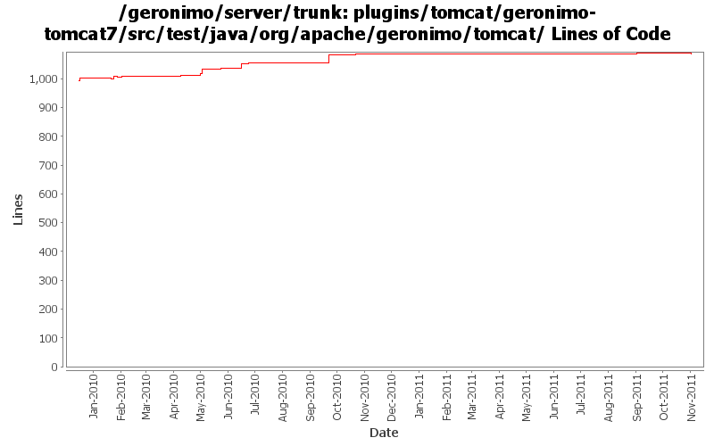

[root]/plugins/tomcat/geronimo-tomcat7/src/test/java/org/apache/geronimo/tomcat

| Author | Changes | Lines of Code | Lines per Change |
|---|---|---|---|
| Totals | 51 (100.0%) | 191 (100.0%) | 3.7 |
| xuhaihong | 22 (43.1%) | 113 (59.2%) | 5.1 |
| djencks | 25 (49.0%) | 76 (39.8%) | 3.0 |
| gawor | 2 (3.9%) | 2 (1.0%) | 1.0 |
| rickmcguire | 2 (3.9%) | 0 (0.0%) | 0.0 |
GERONIMO-6204 Decouple OpenWebBeans from web container
1 lines of code changed in 1 file:
GERONIMO-5743 Use DeploymentWatcher to delete the temporary directories while uninstalling the applications
3 lines of code changed in 1 file:
GERONIMO-6043 gbean reordering so initorder can work
0 lines of code changed in 1 file:
Upgrade Tomcat version to 7.0.18.0-SNAPSHOT
1 lines of code changed in 1 file:
GERONIMO-5993 MyFaces WebApplicationContext might not work if multiple JSF web applications in the same EAR package
Now, the name of web module will be used as the key.
1 lines of code changed in 1 file:
a. Update the WebAttributeNames in the geronimo-web module to WebApplicationConstants
b. Update the WebApplicationConstants in the geronimo-wab module to WABApplicationConstants
4 lines of code changed in 1 file:
clean up owb before each test
2 lines of code changed in 1 file:
GERONIMO-5702: Update for Karaf 2.1.2. Based on patch from Viola Lu
1 lines of code changed in 1 file:
GERONIMO-5685 No initialized web beans context is attached while creating servlet instance in Tomcat assembly
0 lines of code changed in 1 file:
GERONIMO-5050 provide a means of sharing the openejb-initialized owb context with web containers. Use it for tomcat
1 lines of code changed in 1 file:
Update codes due to recent changes in Tomcat trunk
3 lines of code changed in 1 file:
GERONIMO-5624 more info tree for tomcat
2 lines of code changed in 1 file:
GERONIMO-5557 Add a similar context element in the schema, currently we could use this elements for most context level attributes configurations and context parameters. (Based on the patch from viola.lu)
1 lines of code changed in 1 file:
GERONIMO-5624 use info tree for tomcat web app deployment
39 lines of code changed in 6 files:
GERONIMO-5190 use openejb-jee jaxb tree for spec dds
2 lines of code changed in 1 file:
a. Use Boolean/Integer.valueOf
b. Use Map.Entry as iterator item
c. Make sure all the stream objects are closed
28 lines of code changed in 6 files:
a. remove the use of configurationUrl \n b. Add a BundleAwareReference interface
1 lines of code changed in 1 file:
Update integration codes due to recent changes of Tomcat trunk
1. Set meta-complete to disable Tomcat's annotation scanning
2. Disable XML validation by Tomcat
2 lines of code changed in 3 files:
1. Separate the map for module scope and comp scope
2. Keep the same map instance in the shareContext, so that other module extension could have chance to add jndi info
1 lines of code changed in 1 file:
1. Use a full loop to find the web-fragment.xml in the embedded jar file of the bundle, might be easier once we have full ear support
2. Use the deploymentDescriptor to calculate the component permission, currently, it seems that we have no way to read the web.xml while the package is of ear type
11 lines of code changed in 1 file:
Disable annotation scanning for EJB Web Service
6 lines of code changed in 1 file:
a. Calculate web permissions while starting the web module to support setServletSecurity feature in Servlet 3.0
b. Initial support ServletContainerInitializer, some improvements might be needed, such as use ASM ?
c. Support ORDERED_LIBS ServletContext attribute
50 lines of code changed in 1 file:
cf OPENEJB-1252 replace file.toURL() with file.toURI().toURL()
1 lines of code changed in 1 file:
GERONIMO-5249 not sure why these tests passed when I built earlier
2 lines of code changed in 1 file:
GERONIMO-5249 use Karaf's proxy login module to load login modules from correct bundles
3 lines of code changed in 1 file:
GERONIMO-5051: Pass listeners discovered in tlds during deployment to Tomcat. Tomcat won't have to scan for TLDs at startup and it is closer to what we do for Jetty
1 lines of code changed in 1 file:
web apps no longer have a base url since they are always packed in bundles
0 lines of code changed in 1 file:
GERONIMO-4996 GERONIMO-5025 separate jndi context setup from web app context since jsf needs it too. Hook up myfaces which now starts. Don't know if myfaces works
9 lines of code changed in 1 file:
GERONIMO-5025 Initial work on ee 6 scoped jndi stuff. Minimal testing so far
1 lines of code changed in 1 file:
GERONIMO-4992, GERONIMO-4920 Fix a bunch of problems in tomcat, including bad use of Class.forName in tomcat's StandardContext
1 lines of code changed in 1 file:
GERONIMO-4989 basic support for ServletContext.getResource from bundle.getEntry
13 lines of code changed in 7 files:
Set the BundleContext as a ServletContext attribute for Tomcat.
0 lines of code changed in 2 files: